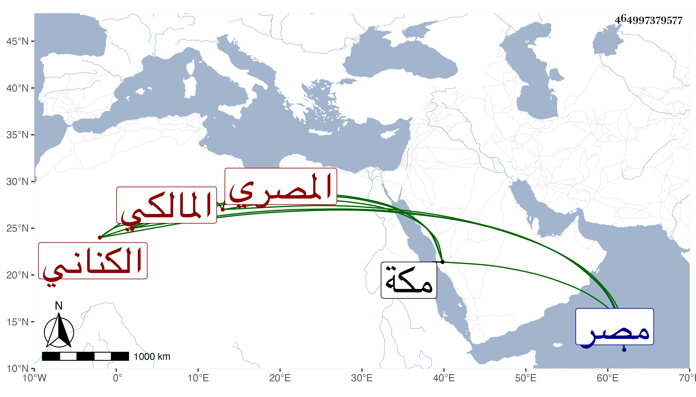

0902Sakhawi.DawLamic.ITO20230111-ara1.EIS1600.464997379577
Biography ID: 464997379577
741
محمد بن عبد الرحمن بن حسن بن سويد فتح الدين أبو الفتح بن الوجيه أبي هريرة بن البدر الكناني فيما يزعمون المصري الأصل والمنشأ المالكي الماضي أبوه وجده والآتي ولده محمد ، ويعرف كسلفه بابن سويد ورأيت بعضهم سمي سويدا أيضا محمدا . ولد في ذي الحجة سنة ثلاث وعشرين وثمانمائة بمر الظهران بالمنحني ، وأمه فاطمة ابنة الفخر القاياتي جد أم هانئ ابنة الهوريني والدة السيف الحنفي لأمها ، ونشأ بمصر في كنف أبيه فحفظ القرآن وأربعي النووي وتقريب الأسانيد في الأحكام وابن الحاجب الفرعي والأصلي والكافية والشافية ، وعرض على البساطي وشيخنا وجماعة وأخذ الفقه والعربية وغيرهما عن الزين عبادة والأصول عن عمر بن قديد ، ولازم العز عبد السلام البغدادي . والكريمي تلميذ السيد وابن الهمام وغيرهم في فنون ومما قرأه على ثانيهم شرح الحاجبية ، وتقدم في الفضائل ، وحج رفيقا للحسام بن حريز ثم لأخيه السراج وجاور مع الأول لمزيد اختصاصهما وقرأ بمكة على الحسين الأهدل الموطأ وعلى أبي الفتح المراغي الشفا وسمع على الزين بن عياش ومحمد الكيلاني وآخرين ، وناب في القضاء بل ترشح للوظيفة وأقرأ بعض الطلبة ولكن كان انقباضه عن الناس وترفعه وإمساكه سببا لتخلفه بل امتحن بأخرة وأهين ، وكان كثير الميل إلي والإجلال لي مما لم أر فعله له مع غيري . مات في يوم الإثنين تاسع عشر ذي القعدة سنة ثلاث وسبعين وصلي عليه من الغد بجامع عمرو تقدم السيف الحنفي بوصية منه بذلك لقرابة بينهما ، وقد قال فيه ابن تغري بردى أحد التجار ونواب المالكية كان معدودا من فقهاء المالكية ولديه فضيلة ويتهم بمال كثير أخذ السلطان من ولده مصالحة نحو ستة آلاف دينار وكان مع تموله ساقط المروءة مبهذلا في الدول وقصته مع كسباي الدوادار مشهورة من الضرب والحبس وحمله لبيوت الحكام كل هذا لشح فيه وبخل زائد وتقتير حتى على عياله ونفسه مع اجتهاد كبير في تحصيل الأموال وطباع تشبه طباع الأقباط ، بل قيل لي أن جد أبيه سويد باشر دين النصرانية فعند ذلك تحققت ما شككت فيه ، وعلى كل حال فهو ممن لا يتأسف أحد على موته . انتهى كلامه وفيه تخليط وخطأ كثير .
